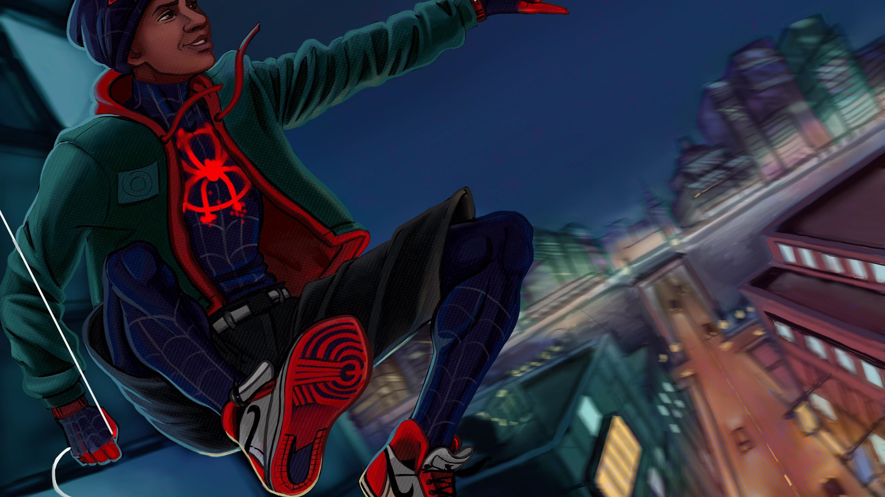

Background
Miles Morales doesn't know what it takes to be a Super Hero, but will have to learn in order to save, not only his universe, but the universes of Spider"Men".
Spidey-verse
Miles' Characteristics
- Confused by his powers
- Betrayed by family
- Weight of universes on his shoulders
Spidermen
Miles learns a lot about his power and how to be a Super Hero from his new Spidey-friends. Click on links below to read more about them